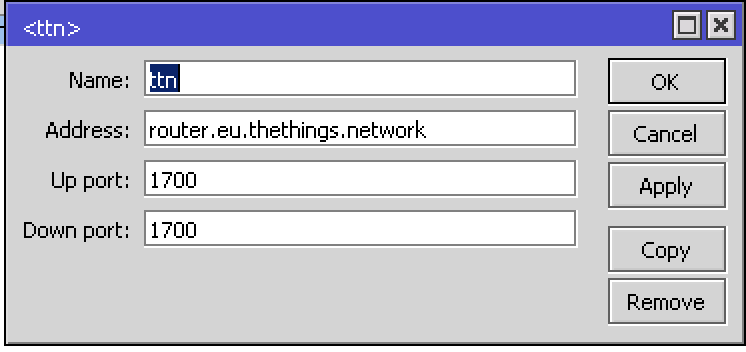
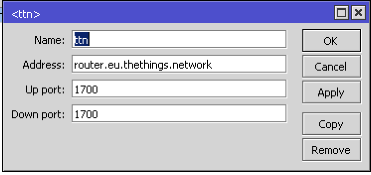

MikroTik Routerboard wAP LoRa8 kit
This is a configuration guide to connect the MikroTik Routerboard wAP wAP LoRa8 kit to The Things Network.
Connections

For adding an external antenna, open the case and use the SMA connector.

Configuration
- Download the Official MicroTik Winbox configuration tool for Windows. Mac users can use the unofficial ported application. Alternatively, there is also a mobile app for configration - link
- Make the connections as shown the the section above.
- Open network connections on your PC, mobile phone or other device and search for MikroTik wireless network and connect to it.
- Open the Winbox app and select the Refresh button. If the connections were successful, your device will be detected as shown below.

- Once connected to the wireless network, open http://192.168.88.1 in your web browser to start configuration, user name: Admin and there is no password by default.
- The dashboard that you now see provides many configuration options. But we are concerned only with the LoRa configuration. Select
IP -> LoRafrom the option list. - First add a LoRaWAN backend server configuration by selecting the Servers tab. Sample configuration to connect to The Things Network EU server is shown in the images below.
 
 - Now choose the Devices tab. Your LoRa Gateway interface must be visible. First click to disable it before proceeding.
- Double-click the gateway and fill in the configuration. Select the The Things Network server that was configured in the previous step. Make note of the GatewayID field, which is the unique identifier used to configure this gateway to the The Things Network.

- Once configured, enable the gateway.
- Now login to The Things Network Console and register your gateway while enabling the
I'm using the legacy packet forwarder. If the configuration succeeded, your gateway will now be shown as connected on the console and is ready to receive LoRa packets.